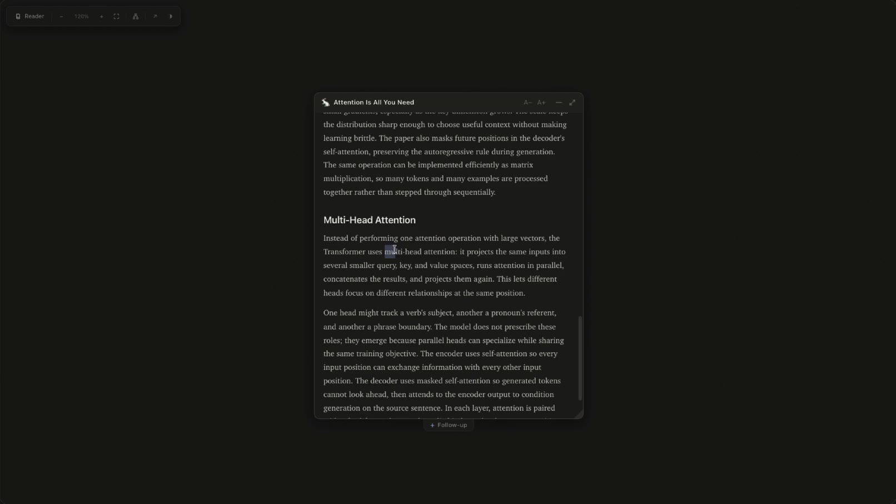
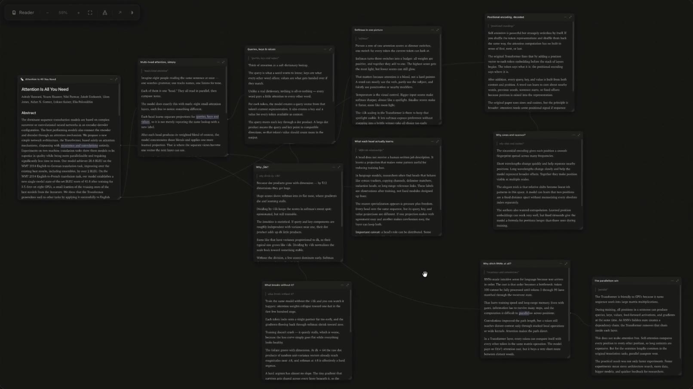
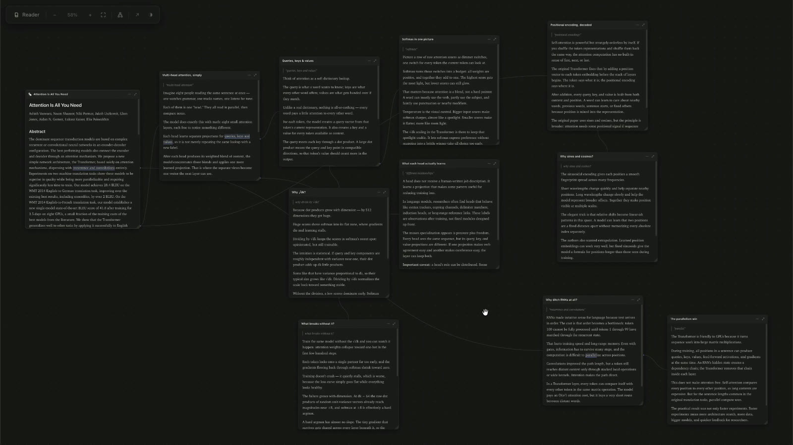
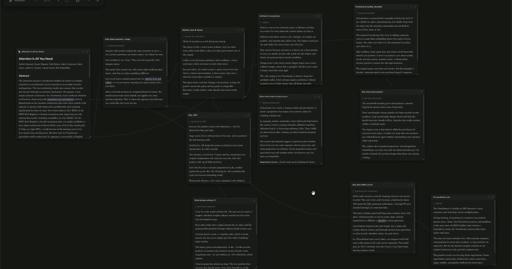

无限学习分支画布。选文本问问题 → 答案作为子文档 → 递归无限深入。 MCP Server 为 Agent（Claude Code / Codex / 任意 MCP 客户端）提供 4 个工具驱动整个流程： 打开文档、回答问题、提取 PDF、列表浏览。长轮询等待 + 流式渲染答案。 纯本地运行，零账号，零云端依赖。




每个回答都成为可继续探索的节点。
你在 Reader 模式读文档时，选中任意文本弹出提问面板（Lenses 一键预设：Explain · ELI5 · Example · Go Deeper），
Agent 流式回答生成子文档；切换到 Canvas 模式可俯瞰整个分支地图，回溯任意节点。
数据存储在本地 ~/.rabbithole/（JSON 文件），完全私有。
打开文档（{title, content} 或 {title, file_path}），可带 base_url（URL/repo 来源）和 assets（本地图片）。打开浏览器画布并阻塞，等待人类选文本提问。长等待返回 keep_listening 时立即用 hole_id 再次调用。
回答一个待处理的分支请求 → 生成子文档。流式调用 partial: true 逐块输出，最终用含标题的普通调用结束。支持 base_url 和 assets，图片用 asset:name.png 引用。
提取本地 PDF 为页面 PNG、嵌入式光栅图、元数据和逐页文本。返回资源名称供 open_rabbithole 引用 ingest_id，或直接灌入已有 hole_id。
列出已保存的所有分支洞，按 hole_id 可随时恢复之前的探索进度，继续从断点深入。
# 安装（Claude Code） claude mcp add rabbithole -- npx -y github:shlokkhemani/rabbithole # 安装（Codex CLI） codex mcp add rabbithole -- npx -y github:shlokkhemani/rabbithole # 然后编辑 ~/.codex/config.toml 添加: [mcp_servers.rabbithole] tool_timeout_sec = 600 # 验证工具注册 claude mcp list # 应显示 rabbithole connected # 启动后对 Agent 说： "open this document in rabbithole" # 人类操作：选文本 → 提问 → Agent 回答 → 新节点诞生 # 循环直到 session_closed # 本地克隆模式（更快，适合开发者） git clone https://github.com/shlokkhemani/rabbithole.git cd rabbithole && npm install claude mcp add rabbithole -- node "$(pwd)/bin/mcp-server.js"
全屏阅读，分支侧边栏，面包屑导航，选中文本生成内联标注，悬停预览子文档
无限画布，可拖拽调整卡片位置与大小，边线指向父文档精确选中文本，支持折叠
答案逐词实时渲染，呼吸光标在 Reader、线程和 Canvas 卡片中同步显示
一键提问预设：Explain · ELI5 · Example · Go Deeper（快捷键 1–4）
每个文档底部有追问入口，答案内联渲染，同样支持分支
J/K 跳转标注，Enter 打开，Delete 返回，Cmd+K 全局搜索
数据存 ~/.rabbithole/ JSON，IndexedDB 缓存，可导出 .rabbithole 便携文件
MCP 模式下无账号无 API Key，数据不离开本机，隐私完全自主
rabbithole.ing 自带密钥入口，支持 OpenRouter / Anthropic / OpenAI / 本地兼容端点
| 格式 | 支持方式 | 说明 |
|---|---|---|
| Markdown | 直接支持 | 源文本 + 数学公式 + 代码高亮 + 图片，来源 URL 自动解析相对链接 |
| 数学公式 | 内置 | 答案支持 LaTeX 数学公式渲染 |
| 代码块 | 语法高亮 | 答案内代码块自动语法高亮，支持多语言 |
| ingest_pdf | 本地 PDF → 页面 PNG + 光栅图 + 文本，ingest_id 关联到画布节点 |
|
| URL | Web App | 浏览器版本支持 URL 直接摄入（可选 CF Worker 绕过 CORS） |
| 图片资产 | asset:name.png | 本地图片用 asset:name.png 语法引用，MCP 传入 assets 数组 |
| 环境变量 | 默认值 | 说明 |
|---|---|---|
RABBITHOLE_DIR |
~/.rabbithole/ |
存储根目录，JSON 文件和资源目录 |
RABBITHOLE_NO_BROWSER=1 |
auto | 禁止自动打开浏览器（无头模式 / 测试） |
RABBITHOLE_MAX_BLOCK_MS |
240000 |
单次 MCP 阻塞等待上限（毫秒），超时返回 keep_listening |